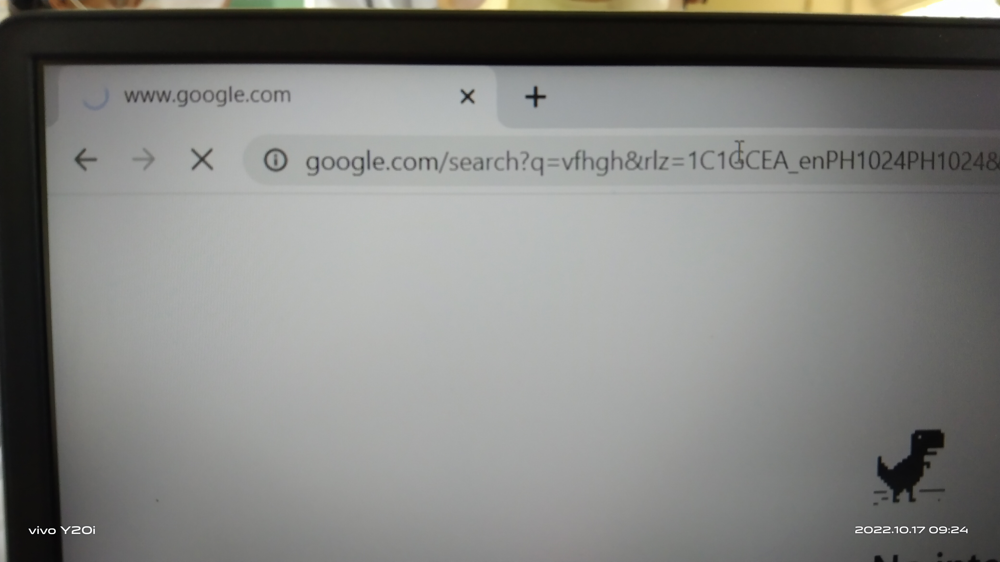
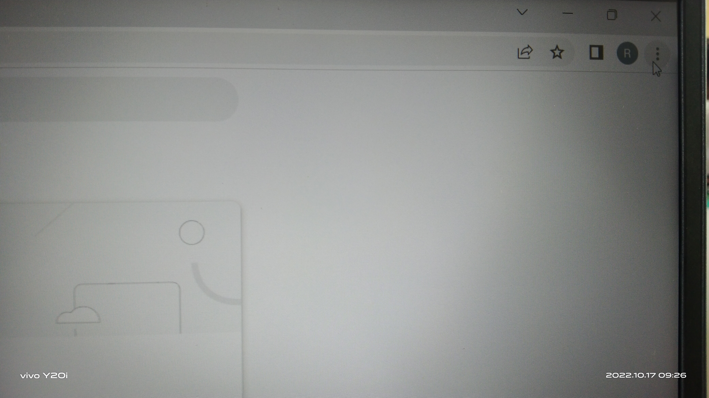
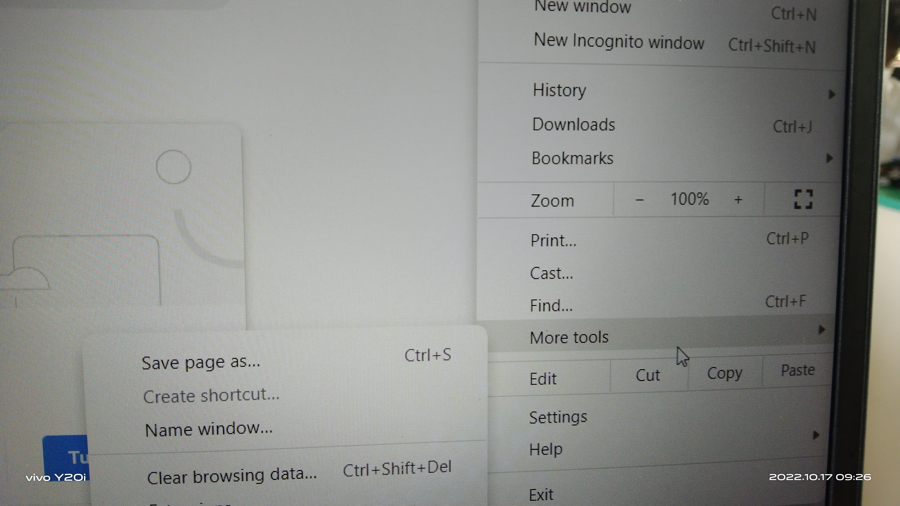
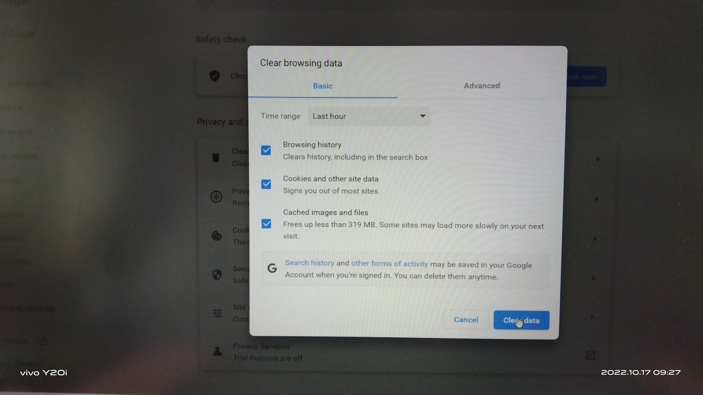
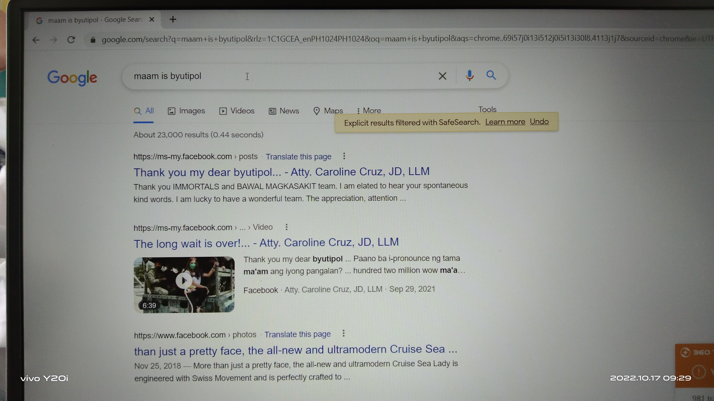
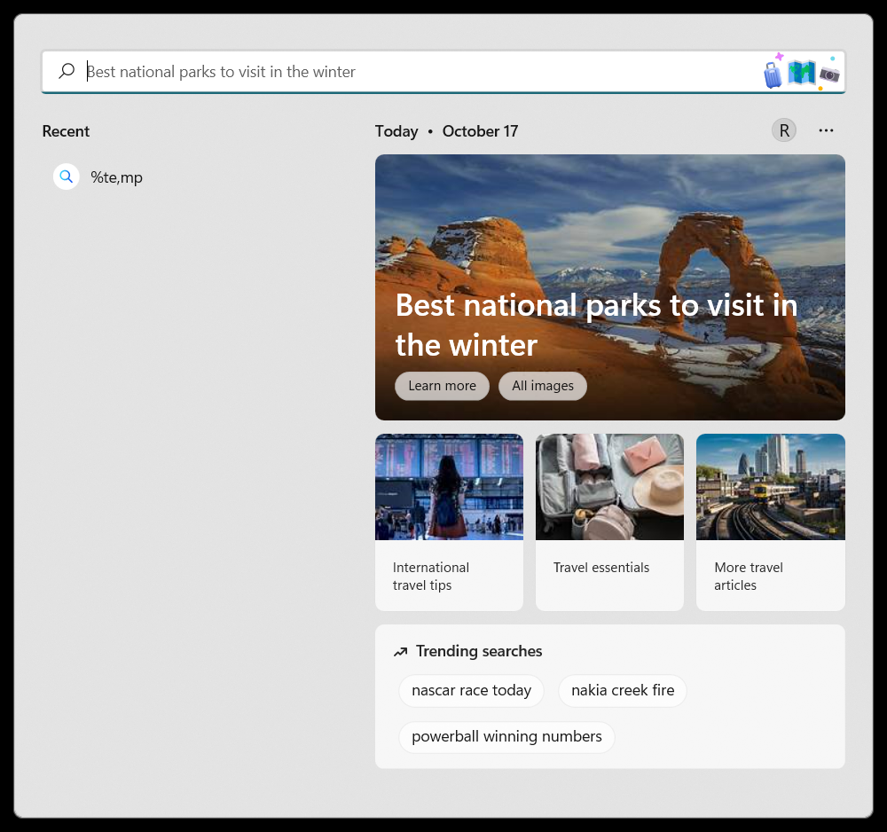
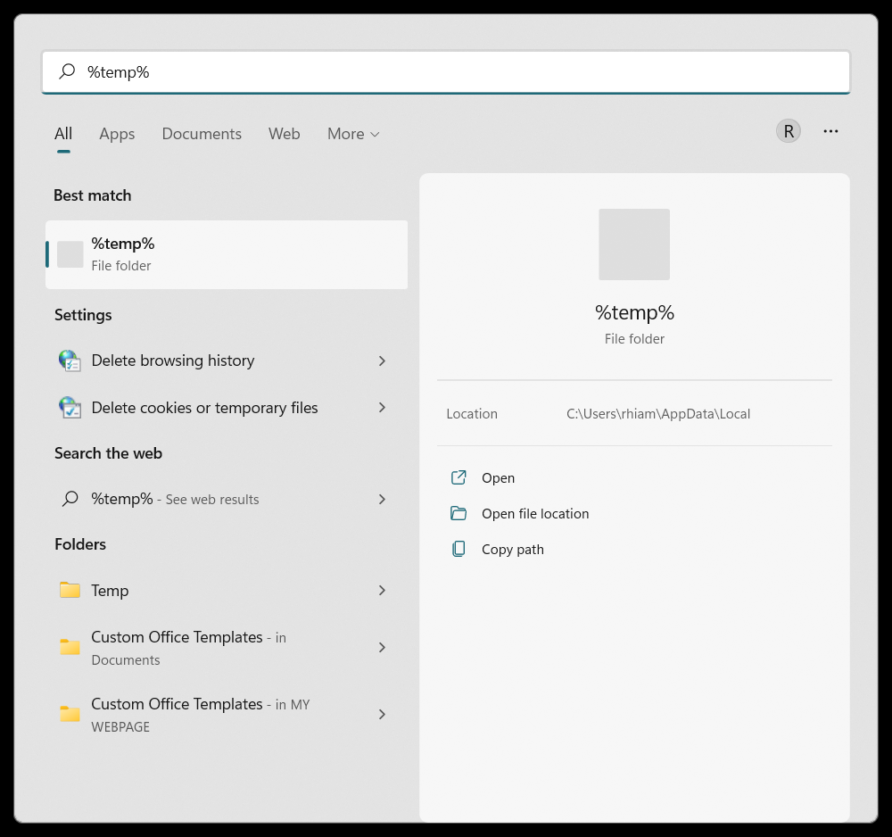
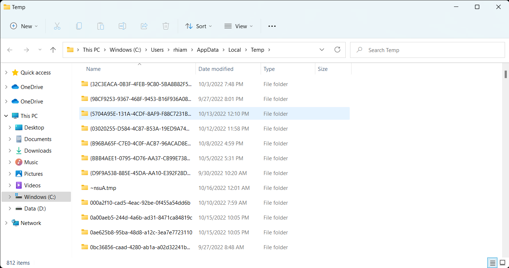

- Home
- Vision
- Mission
-
- HTML Dis/Assembly of pc Networking Troubleshooting
BASIC TROUBLESHOOTING
How to troubleshoot slow internet browsing?
If you experience a slow internet browsing even though the connection is fast?
 There are several reasons why a user experience this issue. To troubleshoot this issue here are some methods.
Method 1
Clear browser caches.
Step 1: Click on the three dots in the upper right corner of you browser. In this tutorial we'll be using Chrome.
 Step 2: Click on More Tools
 Step 3: Clear browsing data.

Step 4: Check all of the boxes.
 Step 5: Click on Clear Data.
Step 6: Reopen Chrome.
 After that you should have a better internet browsing.
If you still experience slow browsing even after doing the steps above. This method is your last hope.
Method 2
Clearing Temp Files
Step 1: Click on Windows Search Bar.
 Step 2: Type "%temp%", and click enter.
Step 3: Delete all of the files in that folder.
 Step 4: Reopen Chrome. After that you should have a better internet browsing.

"One for All, All for One"